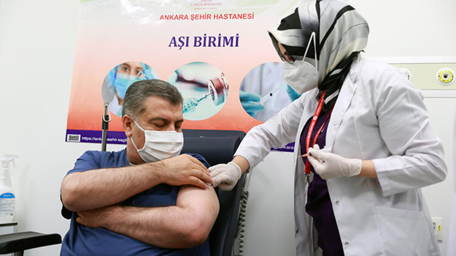

İLK AŞI BAKAN KOCA'YA
Acil Kullanım Onayı verilmesinin ardından ilk CoronaVac aşısı, Ankara Şehir Hastanesi'nde Sağlık Bakanı Fahrettin Koca'ya uygulandı. Bakan Koca, "Herkesin mutlaka aşı olması gerektiğinin altını çizmek istiyorum. Eski hayatımıza dönmek için aşıyı mutlaka yaptırmamız gerekiyor." ifadelerini kullandı. Covid-19 aşısının ne zaman, kimlere uygulanacağı hakkında da detaylar paylaştı.
Aşılamanın dünyada başlamasıyla bu ışığın görüldüğünü kaydeden Koca, "Önümüzdeki günlerin aydınlık olacağına inanıyorum. Milletimize, memleketimize hayırlı olmasını diliyorum." diye konuştu.Koca, herkesin mutlaka aşı olması gerektiğinin altını çizerken, "Çünkü bu hastalıktan korunmanın en önemli yollarından biri aşı. Normal, eski hayatımıza dönmek için aşıyı mutlaka yaptırmamız gerekiyor." değerlendirmesinde bulundu.
Bilim Kurulu üyelerine, CoronaVac aşısının ilk dozu yapıldı Türkiye İlaç ve Tıbbi Cihaz Kurumu (TİTCK) tarafından "Acil Kullanım Onayı" verilmesinin ardından Çinli Sinovac firmasınca üretilen CoronaVac aşısının ilk doz uygulamaları Ankara Şehir Hastanesi'nde gerçekleştirildi. Bakan Koca'nın CoronaVac aşısının ilk dozunu olmasının ardından Koronavirüs ve Toplum Bilim Kurulu üyeleri de aşı yaptırdı. Koronavirüs Bilim Kurulu üyelerinden Prof. Dr. Hasan Tezer, aşı olmaktan duyduğu mutluluğu dile getirerek, herkesin aşı yaptırması temennisinde bulundu. "Pandemiyi durdurmanın aşıdan başka yolu yok" Koronavirüs Bilim Kurulu üyelerinden Prof. Dr. Recep Öztürk, ilk dozunu yaptırdığı CoronaVac aşısının süresi geldiğinde ikinci dozunu da olacağını vurguladı. Kovid-19 ile mücadele sürecinde tüm vatandaşlara sağlık ve esenlik dileyen Öztürk, "Herkese aşılarını günleri geldiğinde yaptırmalarını öneriyorum. Çünkü şu anda ciddi bir pandemi sürecindeyiz. Pandemiyi durdurmanın aşıdan başka yolu yok." dedi. Koronavirüs Bilim Kurulu üyelerinden Prof. Dr. Tevfik Özlü de ilk etapta sağlık çalışanlarının, hemen sonrasında ise 65 yaş üzerindekilerin aşı olması gerektiğine işaret etti. Özlü, "Aşıda tedirgin olacak, korkacak, enjeksiyon, iğnenin dışında herhangi bir şey olmadığının altını çizelim. Aşının güvenli olduğunu, güvenlik yönünden herhangi bir sıkıntısı olmadığını, korumasının, etkinliğinin yüksek olduğunu düşündüğümüzde en kısa sürede hepimizin aşılanmasının en doğru yaklaşım olacağına inanıyorum." diye konuştu.